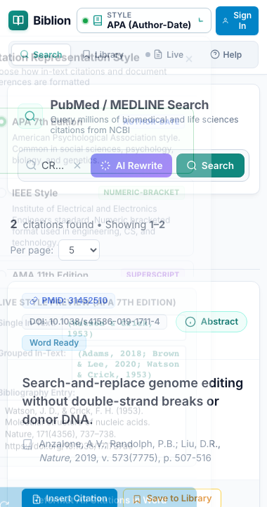

#Citation Styles & Automatic Bibliographies
Product: Biblion Citation Assistant
Audience: Academic Researchers, Scientists & Medical Writers
Available in: Microsoft Word (style selection and document formatting)
Maintained by: Documentation Writer
#1. What It Does
Biblion inserts citations into Word as smart citation controls and keeps a References section at the end of your document up to date. When your target journal changes, switch the style once and Biblion reformats every citation and the whole reference list for you.

#2. Supported Styles
| Style | Type | In-text example | Reference list order |
|---|---|---|---|
| APA 7th Edition | Author–date | (Watson & Crick, 1953) | Alphabetical by first author |
| Harvard | Author–date | (Watson and Crick 1953) | Alphabetical by first author |
| IEEE | Numbered, brackets | [1] | Order of appearance |
| Vancouver / NLM | Numbered, parentheses | (1) | Order of appearance |
| AMA 11th Edition | Superscript numbers | ¹ | Order of appearance |
| Nature | Superscript numbers | ¹ | Order of appearance |
#3. Choose a Style
- Open the style selector at the top of the Biblion taskpane. It shows the current style, for example APA. It appears only inside Word.
- Pick a style from the list. A live preview shows what in-text citations will look like (for IEEE,
[1]). - Close the panel. Biblion reformats the citations already in your document automatically.
You will see a confirmation such as "Successfully reformatted 3 in-text citation(s) and 3 reference(s) to APA 7th Edition!"
#4. Insert a Citation
- Place your cursor where the citation belongs.
- Search PubMed in Biblion (see Searching PubMed).
- On the article card, click Insert Citation.
Biblion then:
- inserts the in-text citation in your document font and size,
- creates a References heading at the end of the document (first citation only),
- adds the formatted reference to the list, and
- confirms, for example, "Citation inserted in Vancouver / NLM (Document: 1 citations, 1 references)!"
#Several references in one place
Insert a second citation right next to an existing one (separated only by a space) and Biblion merges them into one group: [1] + [2] becomes [1, 2]. Three or more consecutive numbers are shortened to ranges, e.g. [2–4, 7, 9–11]. In AMA and Nature the numbers are shown as superscripts, e.g. ¹˒³⁻⁵.
#5. Numbering Stays Correct Automatically
- Numbered styles (IEEE, Vancouver, AMA, Nature): numbers follow the order citations first appear in the document. Add a citation earlier in the text and everything renumbers.
- Author–date styles (APA, Harvard): the reference list is sorted alphabetically by first author.
- References that are no longer cited are removed from the list; newly cited ones are added.
If some details are missing (no volume, issue or pages), Biblion leaves them out cleanly, with no stray punctuation.
#6. Tips
- Pick the journal's style before you start, but don't worry: you can switch at any time.
- Use Live References to double-check what a citation points to.
- Outside Word, Copy Citation copies both the in-text citation and the reference. See Using Biblion in a Web Browser.
Coming later (proposed, not yet available): Chicago style and importing custom CSL style files.